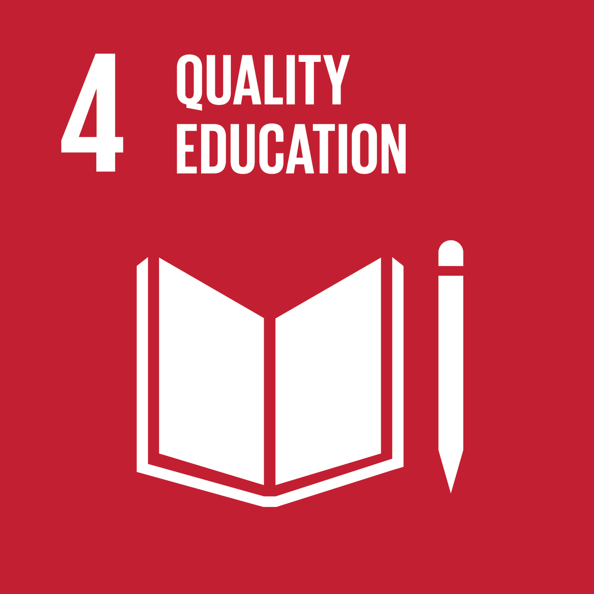
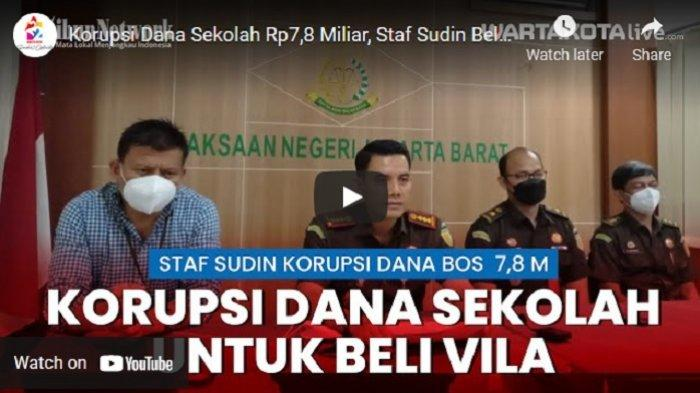
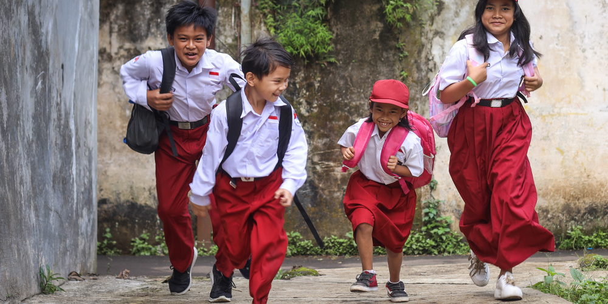

Kerjasama adalah salah satu aspek terpenting dalam kehidupan sehari–hari. Oleh karena itu, negara–negara saling membantu satu dengan yang lainnya dalam berbagai bidang pekerjaan untuk meningkatkan kesejahteraan dan kemakmuran negaranya. Indonesia merupakan salah satu negara yang memiliki hubungan dan koneksi yang erat dengan banyak negara, seperti Amerika, Jepang, dan lain sebagainya. Namun, sebelum kita lebih mendalami mengenai kerjasama internasional Indonesia dengan luar negeri, kita wajib memahami penjelasan dari tiga jenis kerjasama, yaitu:


SDGs atau Sustainable Development Goals dapat disebut sebagai panggilan yang mendesak bagi semua negara agar mampu bertindak dan terus berkembang dalam kemitraan global. Tentu saja, SDGs memiliki alasan mengapa diciptakan, yaitu untuk menciptakan dunia yang lebih baik dan dipenuhi dengan kesejahteraan serta kedamaian bagi semua individu. Ada 17 tujuan dalam tujuan global ini yang mencakup berbagai macam hal, termasuk kesehatan dan pelayanan medis, pendidikan yang layak, lingkungan yang lebih bersih, mencegah kelaparan dan kemiskinan, dan lain sebagainya. Salah satu dari tujuan–tujuan tersebut yang paling penting, terutama bagi para anak, remaja, dan dewasa muda adalah pendidikan. Ada masalah–masalah mengenai sistem pendidikan di Indonesia yang masih terjadi hingga tahun 2024, dan banyak diantaranya terisi dengan kritik–kritik tinggi.
Mision: "Ensure inclusive and equitable quality education and promote lifelong opportunities learning opportunities for all."
Misi: "Menjamin kualitas pendidikan yang inklusif dan merata serta meningkatkan kesempatan belajar sepanjang hayat untuk semua."
Salah satu masalah yang dihadapi sistem pendidikan Indonesia saat ini adalah mahalnya biaya sekolah. Menurut suatu sumber, yakni YLBHI atau “Yayasan Lembaga Bantuan Hukum Indonesia”, negara ini masih belum sepenuhnya memberikan kesempatan gratis bagi para murid untuk mendapatkan pendidikan tanpa perlu membayar biaya yang mahal. Masalah ini bahkan sampai pada titik dimana mahasiswa yang berdomisili di dalam negeri untuk melanjutkan pendidikan di perguruan tinggi di Indonesia mengakses pendidikan mereka melalui Perusahaan Pinjaman Online, yang telah bekerja sama dengan 83 lembaga perguruan tinggi. Alasan mengapa adalah karena biaya yang harus dibayarkan untuk penentuan UKT meningkat drastis, yang tidak hanya berdampak pada mahasiswa tetapi juga sekolah itu sendiri.
Kedua, guru dan dosen yang selama ini mengajar dan membimbing para siswa dan siswi di dunia pendidikan tidak mendapatkan gaji yang cukup. Rupanya, guru yang bekerja di kota menerima gaji sekitar 1,5 juta hingga 2 juta rupiah, sedangkan yang tidak, hanya menerima gaji yang sangat kecil, yakni 300 ribu hingga 1 juta rupiah. Perbedaan yang besar tersebut menimbulkan ketidakseimbangan yang jauh dari keadilan, terutama karena guru dan dosen yang mengajar di desa atau kota kecil juga pantas untuk mendapatkan gaji yang lebih tinggi.
Sekolah–sekolah saat ini juga menghadapi masalah terkait korupsi, baik itu masalah nepotisme maupun persoalan yang lebih menyeramkan seperti narkoba. Hal ini disebabkan oleh kurangnya pengawasan dan penegakan hukum. Hal ini dapat sangat mempengaruhi komunikasi antara guru dan siswa, serta kondisi mental para murid dalam memperhatikan pelajaran di kelas dan cara mereka memahami materi yang diberikan.
Minimnya partisipasi siswa dan siswi serta minimnya kebebasan akademik juga menjadi faktor yang sangat penting dalam permasalahan sistem pendidikan Indonesia. Murid–murid saat ini jarang berpartisipasi di kelas karena mereka terlalu kecanduan dengan perangkat elektronik mereka masing–masing, seperti handphone, laptop, dan masih banyak lagi. Hal ini tentu saja dapat disebabkan oleh berbagai hal. Pertama adalah minimnya kebebasan akademik. Banyak siswa saat ini memiliki minat untuk fokus kepada mata pelajaran pilihan mereka sendiri dan tidak mendalami subjek yang mereka tidak sukai. Mereka akan jauh lebih fokus pada apa yang menarik perhatian mereka, dibanding dengan apa yang dipaksakan untuk mereka pelajari. Faktor lainnya adalah karena partisipasi yang bermakna dalam perumusan kebijakan pendidikan mulai berkurang. Hal ini harus segera diperbaiki, karena tanpa partisipasi siswa dan siswi yang cukup, komunikasi antara guru dan para muridnya akan menjadi semakin tipis dan sekolah tidak akan berfungsi dengan baik.
Secara keseluruhan, peringkat Indonesia dalam dunia pendidikan masih belum cukup baik, terutama apabila dibandingkan dengan negara–negara lain, bahkan negara tetangga seperti Singapura, Thailand, dan banyak lagi. Secara global, Indonesia masih berada di posisi ke–57 atau 58 dalam pemeringkatan sistem pendidikan. Indonesia masih harus mengejar sejumlah hal untuk bisa meningkatkan peringkatnya di masa yang akan datang. Namun, kalau seluruh warga atau masyarakat Indonesia, dan tentunya pemerintah, memiliki determinasi yang cukup untuk menciptakan sistem pendidikan yang lebih baik dan lebih sehat bagi para anak, remaja, dan mahasiswa, serta memperbaiki semua masalah yang telah dijelaskan di atas, Indonesia pasti akan bisa bangkit.